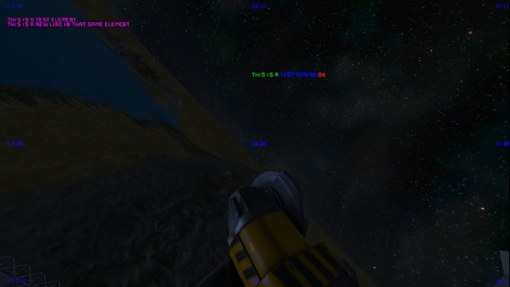

Space Engineers Mod listing
This is a basic website for showcasing the mods that are going to be used in my multiplayer world.
Check out the Steam Collection here.
|  | Text HUD
API Allows modders to add text to the players screen. This mod must be loaded along side any other mod that uses it. |
| Bot_spawner THIS MOD IS FOR DEPENDENCY NOT FOR USE |
|
| Modular Encounters
Systems This mod was designed to be a flexible framework that will handle nearly all spawning of NPC grids in your game world. It also includes a behavior system that NPCs can use to engage with players and the environment in unique ways. The mod was built to be compatible with existing NPC mods, while also providing new and powerful options to add extra variety and control to how NPC grids appear in the game. |
|
| AiEnabled
v1.5 AiEnabled is a total NPC inclusion mod that aims to spice up your gameplay by providing you with companions to aid you as well as enemies to hunt you. All NPCs use custom pathfinding logic to perform their assigned role. As ideas flow and time permits, I'll be adding more NPCs to keep things interesting! |
|
| Advanced
Welding Better welding and grinding, add weld pad block and ability to detach blocks from grids without having to grind down block. |
|
| [QoL]
Production Quota Adds a quota list to the assemblers in game (basic and up). Assemblers will automatically add components to production if the grid contains less than the desired item count. |
|
| Projections To
Assembler This mod adds a button to the projector block that will queue the needed components for the currently projected grid in your assembler. |
|
| [QoL] Mechanical
Keybinds Control your pistons, rotors, and hinges with movement keypresses! |
|
| Smooth
Voxels This mod removes the rough terrain that is found on cliffs and steep hills. Applies to all planets, including modded ones. This mod can theoretically be removed and added at will, but be careful if the planet already has grids on it. Internally, all this mod is doing is removing the "SurfaceDetail" feature from all the planets at startup. |
|
| Colorful
Icons Are you tired of that bluish color of all icons? If yes, I have solution for you! AMAZING COLORFUL ICONS ULTIMATE ENHANCER MOD 4000! |
|
| Build Vision
3.0 This is a quick access context menu, based on the original Build Vision by Jimmacle, designed to supplement the game's terminal. Most of the time, the terminal works just fine for setting up blocks, but sometimes, it's cumbersome. With BV, you can just point and click at a block and have immediate access to its settings, no need to go find a button panel and search for a name you likely can't remember. |
|
| Rich
HUD Master This is not a mod. This is the master module of the Rich HUD Framework: a set of shared tools made to help modders create custom GUI. It's not strictly necessary for you to subscribe to this. If you have a mod that uses this, then it should be loaded automatically. |
|
| Ore
Detector+ Increases the range of ore detectors. |
|
| UfoL's Bullet
Trails (Tracers) - Orange Better bullet traces |
|
| Easy
Block Renaming This mod adds controls to nearly all block types that allows you to easily rename multiple blocks at once. |
|
| Autofill
Bottles Tired of refilling bottles manually? Now your bottles will automatically refill from the excess in your suit whenever you are in a piped cockpit or refilling from a medical station! |
|
| Clean Assembler
Tab When we playing SE with a lot of MOD (which is Weapons or contained special components), our production tab becomes messy. And in this case, this mod could help us. |
|
 |
Eyes
Just Got Clear Made text and other things less blury |
| Sneaky Sounds -
Quieter Tools This mod reduces the volume of hand tools, ship tools, weather, doors, placement sounds and a few others that often feel deafening, while leaving the explosions booming, gatlings cracking and letting you hear a little bit more of the atmospheric sounds (though not the deafening rain). |
|
| Screen Gunk Be
Gone! This mod reduces screen gunk by toning down most of the post-processing effects. |